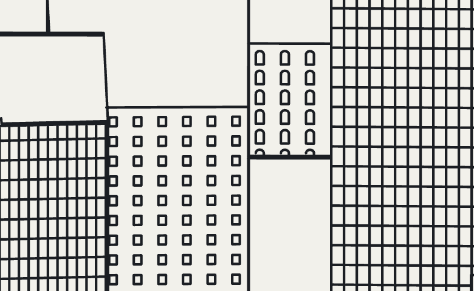
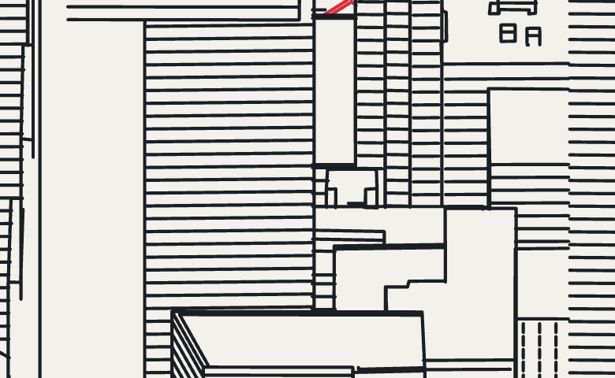
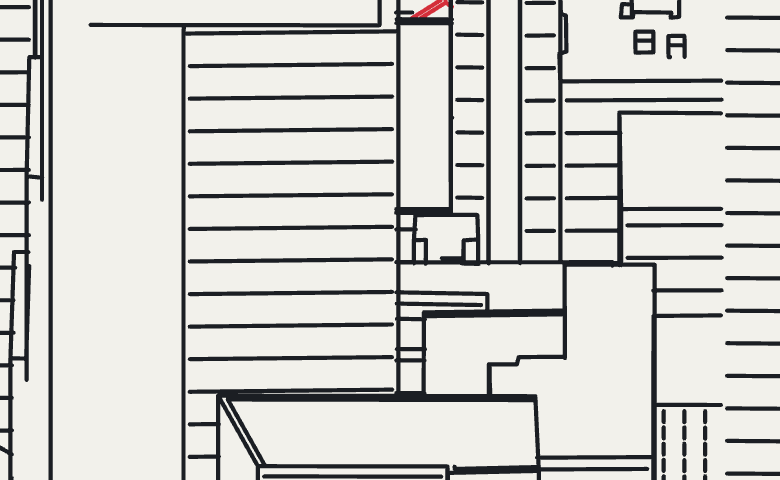
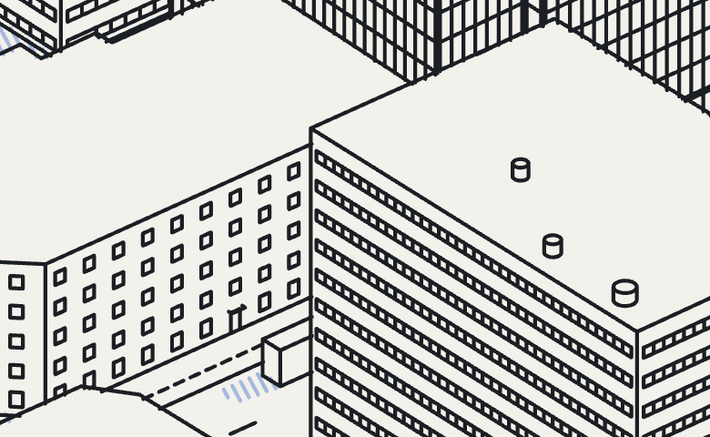

15 November 2026 · Original review · Round 4
This round quiets repetitive façade bands. Floor-line spacing now measures the perpendicular distance between projected strokes, with a 1.5 mm spacing target that follows Detail and pen width. Curtain grids use that rule even at full detail. Mullion spacing likewise accounts for the wall’s projection, with a 1.2 mm target.
Ribbon bands that become too shallow on paper collapse to one floor stroke. Glazing bands and curtain walls leave at least 1.5 pen widths of horizontal clearance from vertical building corners. The existing architectural patterns and building geometry stay intact; rows and columns are reduced coherently.





Three places at three scales, Detail 1 and a 0.35 mm pen, optional OSM tags off. Times are estimates. Midtown at 1:2000 saves about 42 estimated plotting minutes. Sapporo’s proportional waste rises slightly after removing clean window strokes, even though total ink and time fall. At 1:4000 all three drawings are unchanged because existing rules had already removed the affected detail.
| Sheet | Waste before → after | Estimated time change |
|---|---|---|
| Midtown Manhattan 1:1000 | 4.5% → 3.4% | -4.3% |
| Midtown Manhattan 1:2000 | 6.2% → 6.2% | -33.4% |
| Midtown Manhattan 1:4000 | 8.7% → 8.7% | +0.0% |
| Sapporo 1:1000 | 7.1% → 7.2% | -9.3% |
| Sapporo 1:2000 | 12.7% → 13.6% | -11.0% |
| Sapporo 1:4000 | 11.8% → 11.8% | +0.0% |
| Amsterdam 1:1000 | 6.8% → 6.8% | -0.5% |
| Amsterdam 1:2000 | 10.4% → 10.3% | -2.9% |
| Amsterdam 1:4000 | 15.5% → 15.5% | +0.0% |
Before lab report · After lab report (local generated files)
Reviewed all 12 golden sheets, nine LOD sheets and selected enlarged comparisons. Eight goldens change, exclusively in window linework and its plot/SVG summaries. Counts, classification, building faces and other feature strokes remain unchanged.
Regression tests measure perpendicular floor spacing, horizontal mullion spacing and corner clearance on an oblique wall at a steep camera tilt, with 0.35 and 0.7 mm pens. The full suite also checks determinism, panning, setting gates and valid linework. No physical proofs were inspected, nor every seed, bearing and Detail combination or all 29 presets. Dense framed-window grids, balconies and broader composition remain for later work.